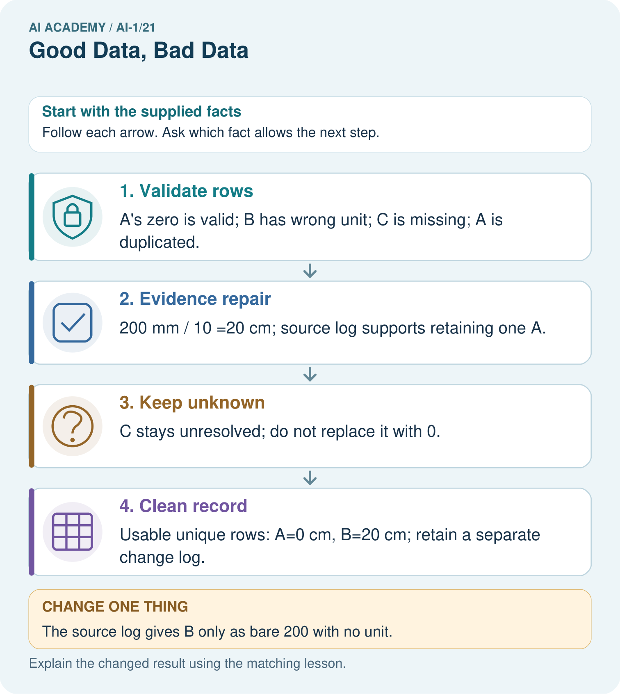
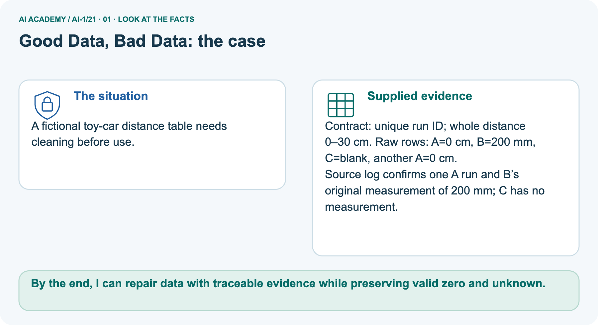
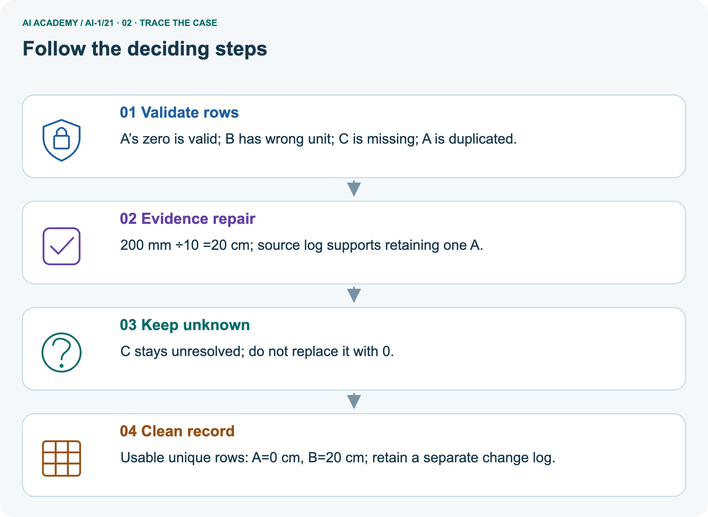
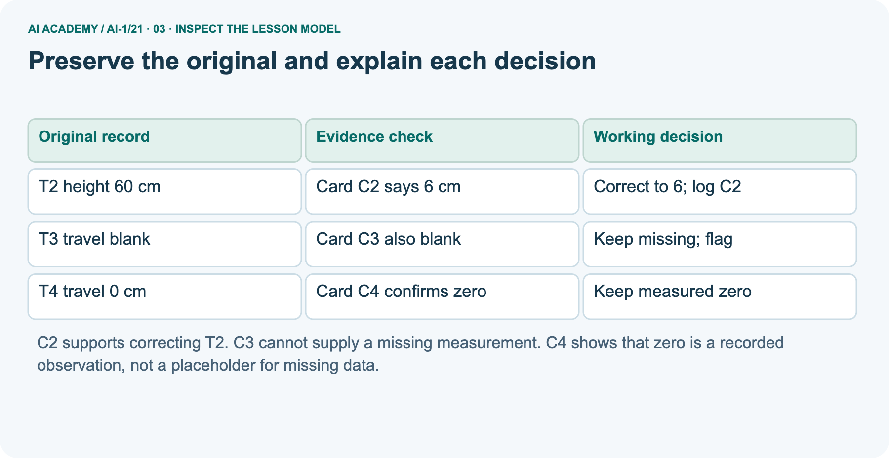
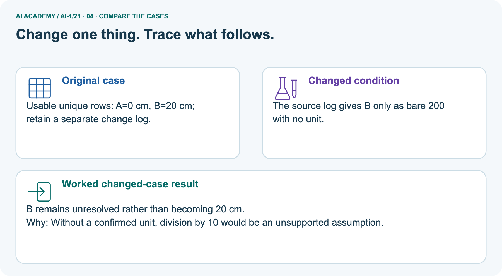
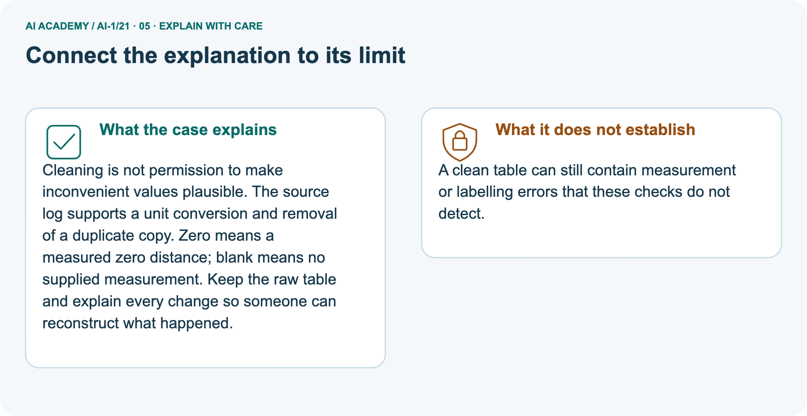
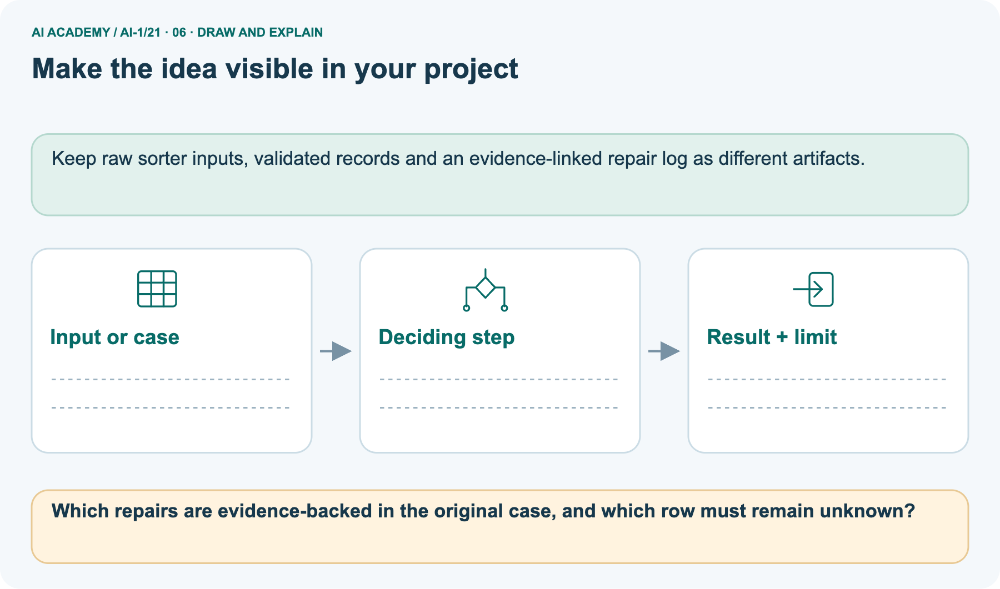

AI Academy · Level 1 · Grade 6 · Week 21 · Teacher guide
Good Data, Bad Data
Learn to understand, design, build, test and explain AI systems responsibly.
Project: Helpful Classroom Sorter
Teacher guide · 1 of 9
Good Data, Bad Data
Prepare Good Data, Bad Data: check the target, prerequisites, resources and adaptable teaching schedule.
Teach the learning cycle
Primary target: Check records against a stated format, unit and meaning before using them
| Session | Sequence and minutes | Resources |
|---|---|---|
| Session 1 · Understand · 45 min | 0–7: recall and prerequisite; 7–15: inspect the concrete case and predict; 15–30: teacher models the worked trace; 30–40: learners explain a step using the text and visual; 40–45: check the core idea. | Use Your mission, Notice the evidence, See how it works, Compare the cases, Words that unlock the idea and Follow a worked example; record the brief recall in the workbook. |
| Session 2 · Practise · 45 min | 0–5: retrieve the procedure; 5–15: W2 completion practice; 15–23: explain and check with a partner; 23–30: each learner answers the misconception check; 30–40: targeted reteaching or a harder variation; 40–45: prepare the investigation. | Use Find and repair a mistake, Practise together, Run the investigation and Build your understanding; use the matching workbook W2 and misconception check. |
| Session 3 · Investigate and transfer · 45 min | 0–5: retrieve the decision rule; 5–20: investigate or trace; 20–30: start the independent case; 30–38: connect the project; 38–43: act on feedback; 43–45: plan the return check. | Use Run the investigation, Connect your project, Show what you know, Study a complete case and Try a new case independently. Allow extra time for the full task set. Use a coding lab only when this week actually provides one; Your lesson route is the planning section. |
This is a starting allocation of 135 minutes, not a validated duration. Preserve all named topics. Schedule extra time for connected examples, the full investigation, independent cases and project building.
Repeated copies of a case share one recorded attempt; they are not new evidence.
Retrieval answer guidance
Recommendations
Without opening the old lesson, explain one key idea from Recommendations. Give an example and a mistake that the idea helps you avoid.
Look for: Apply eligibility requirements before ranking candidates by preferences
Reference example, not the only acceptable wording: J eligible scores 2; K eligible scores 1; L excluded for Spanish; M excluded because unavailable. Recommend J.
Preference matches cannot compensate for failing the English requirement.
Confidence Is Not Correctness
Without opening the old lesson, explain one key idea from Confidence Is Not Correctness. Give an example and a mistake that the idea helps you avoid.
Look for: Distinguish a confidence claim from evidence that a prediction was correct
Reference example, not the only acceptable wording: The learner replaced the documented score meaning with a probability interpretation. Report 80 of 100 feature-match points.
To claim a chance of correctness, a defined probability method and relevant outcome evaluation would be needed.
Save New Examples for Testing
Without opening the old lesson, explain one key idea from Save New Examples for Testing. Give an example and a mistake that the idea helps you avoid.
Look for: Separate examples used to choose a model from examples reserved for its final evaluation
Reference example, not the only acceptable wording: Comparing candidates is development. Scoring a frozen model on previously reserved examples is evaluation, provided they did not influence its development.
Changing a threshold after reading the test score uses that test information for development of the revision; the same set is no longer independent of that revision.
Use the student module and workbook section with this exact week title. The worked case, independent question and answers below form one aligned lesson sequence.
What the learner must demonstrate
A table lists leaf lengths 8 cm, 90 mm, blank and 700 cm. Propose a documented cleaning action for each row. Which values can you safely change immediately?
Concept to explain
Coverage, correctness, and relevance matter more than raw quantity.
| Term | Meaning |
|---|---|
| coverage | how well examples represent needed situations |
| correctness | whether records and labels are accurate |
| relevance | whether data supports the task |
| duplicate | repeated record adding little new coverage |
Prepare the class
Use the supplied scenario, student illustrations and blank paper. For numeric work, offer counters or a calculator after learners show the setup. Fictional records are supplied; personal data and paid accounts are unnecessary.
Alternative compact allocation
This compact option is not the full-week schedule. Use the main teaching cycle and allow extra sessions for the investigation, independent work and project.
Allow 80 minutes: recall 8; explanation 12; worked demonstration 15; guided practice 20; independent assessment 15; project and reflection 10. Extend the lab into a second session when needed.
Preparation for the connected explanation
This paper investigation separates validation, source checking, correction and reporting. The schema is a classroom contract, not a universal range for real ramps or flights.
Preserve raw records and treat a repair as an evidence claim. No spreadsheet, AI account or collection of student data is required.
Readiness answer
No. The score does not supply the missing fact. Keep availability unknown and seek evidence before counting the item as eligible.
The five raw RampLog rows and source-card statements printed in the lesson
A blank change log with ID, field, old value, new value, evidence, reason, reviewer and date
The five independent flight rows and source statements printed in W4
End goal for the pictorial case
By the end, I can repair data with traceable evidence while preserving valid zero and unknown.
This added worked case illustrates the week’s main idea. Retain all original and connected topics; schedule its practice within the teaching cycle.
Teacher guide · 2 of 9
Explain the mechanism
Model Good Data, Bad Data using the supplied case, labelled mechanism and reasoning. Make the scope of each conclusion explicit.
Follow the information instead of imagining magic inside the machine.
1. Input — information entering
INPUT collected examples and labels
2. Process — the deciding step
PROCESS audit coverage, correctness, relevance, and duplication
3. Output — the result
OUTPUT accept, repair, or reject the dataset
Key idea
CORE IDEA Coverage, correctness, and relevance matter more than raw quantity.
How the mechanism works
UNDER THE HOOD Data quality is multidimensional. More rows can amplify duplicates, systematic labeling errors, stale conditions, or irrelevant fields.
Fitness depends on the intended population and decision, not a universal quality score.
Draw a fresh example with all three stages:
Every step connects a claim to observable evidence.
The case to investigate
CASE One animal dataset has 1,000 blurry duplicate photos; another has 120 clear, correctly labeled photos across settings and animal types.
Step 1
STEP 1 — OBSERVE collected examples and labels
Step 2
STEP 2 — TRACE audit coverage, correctness, relevance, and duplication
Step 3
STEP 3 — CONCLUDE accept, repair, or reject the dataset
Model answer
MODEL REASONING Choose the set that covers intended conditions, uses checked labels, includes relevant fields, and avoids misleading duplication. State remaining gaps rather than declaring any dataset perfect.
A claim to avoid
DO NOT OVERCLAIM Large quantity cannot compensate for systematic absence or incorrect labels.
What new evidence could change this answer?
Concrete teaching case
The teaching case
Ordinary pencil lengths are recorded as 12 cm, 14 cm, blank and 130 cm.
What needs checking? May 130 silently become 13?
Exact explanation to model
Why the result follows
Investigate missing and unusually large values using the source and units. Do not invent a repair. Document verified corrections.
Explain the added worked example
Explain the added worked example · 1
A tidy table can still contain wrong information. Validation checks whether a record follows a schema. A schema says which fields are required and what their values mean.
Passing these checks makes a record usable for a stated task; it does not prove that the measurement or claim is true.
Explain the added worked example · 2
Our fictional RampLog records one ramp trial per trial ID. The fields are trial ID, height in centimetres, travel in centimetres and source card. Height must be a whole number from 1 through 10.
Travel must be a whole number from 0 through 10. The source card identifies the original observation. Repeated trial IDs need investigation before counting trials.
The purpose is to count trials whose travel is at least 4 cm. A measured zero means no travel; a blank means no value was recorded. Never silently replace a blank by zero.
Use only the invented records here; no personal information is needed.
Explain the added worked example · 3
The complete raw table is T1: height 4, travel 3, card C1; T2: height 60, travel 5, card C2; T3: height 5, travel blank, card C3; T4: height 6, travel 0, card C4. A second export row repeats T1 with height 4, travel 3 and C1.
C1 confirms one trial T1, not two. C2 reads height 6 and travel 5. C3 has no travel measurement. C4 reads height 6 and travel 0.
Explain the added worked example · 4
Work in a separate corrected copy. Record T2 height 60 to 6, evidence C2, transcription error, reviewer and review date. Link the repeated T1 export row to the first T1; count that single trial once and keep both raw rows.
Do not remove two different trials merely because their measured numbers match.
Key terms
| Term | Meaning |
|---|---|
| Schema | A description of required fields, formats, units and allowed values |
| Validation | Checking a record against stated requirements |
| Provenance | A record of where information came from |
| Correction | A change supported by evidence about the intended value |
| Change log | A record of what changed, why, when and on what evidence |
Model the reasoning aloud
Use the complete worked example below before asking learners to complete W2. Reveal a small part, invite a prediction, then explain the deciding step.
These teacher notes contain solutions; do not reveal the independent case answer during modelling.
| Problem | Permitted action here | Unsupported shortcut |
|---|---|---|
| Invalid height 60 | Check C2; correct to 6 | Guess by deleting a zero |
| Missing travel | Keep missing; seek source | Fill with the class average |
| Repeated T1 ID | Confirm one trial on C1; count once | Treat every repeated number as a duplicate |
| Two sources disagree | Flag conflict; ask for resolution | Pick the value that improves the result |
A conversion changes units while preserving the quantity. If an authorised source records 50 mm, that is 5 cm because 10 mm equals 1 cm. Write the original unit, conversion and resulting unit in the log.
A bare value 50 without a known unit does not justify assuming millimetres.
Model the reasoning aloud · 5
A plausible value can still be a transcription error: 7 would pass the height rule even if its source said 6. Conversely, an unusual but supported value is not automatically wrong.
Checking format and checking agreement with a source are different jobs. A source can itself contain an error, so retain its identity and any unresolved concern.
| Thinking move | Teacher prompt |
|---|---|
| Plan | What is given? What is the question? Which procedure fits these facts? |
| Do | Point to each input and intermediate step in the worked trace. Name the rule that allows the next step. |
| Check | Does the output answer the question? Which assumption or limitation prevents a larger claim? |
Use the diagram and verbal explanation together. Ask learners to match a sentence to a specific visual step; do not assign learners fixed visual or auditory learning styles.
A pictorial worked case: Good Data, Bad Data
A fictional toy-car distance table needs cleaning before use.
The facts we will use
Supplied facts
Contract: unique run ID; whole distance 0–30 cm. Raw rows: A=0 cm, B=200 mm, C=blank, another A=0 cm.
Supplied facts
Source log confirms one A run and B’s original measurement of 200 mm; C has no measurement.

Read the picture one step at a time
Why this result follows
Why the result follows
Cleaning is not permission to make inconvenient values plausible. The source log supports a unit conversion and removal of a duplicate copy. Zero means a measured zero distance; blank means no supplied measurement.
Keep the raw table and explain every change so someone can reconstruct what happened.
What this example does not establish
Keep the stated limit
A clean table can still contain measurement or labelling errors that these checks do not detect.
Change one thing in the pictured case
Change one thing
Change: The source log gives B only as bare 200 with no unit.
Predicted result
Prediction: B remains unresolved rather than becoming 20 cm.
Why the result follows
Reason: Without a confirmed unit, division by 10 would be an unsupported assumption.
Ask while showing the picture
Ask while showing the picture · 6
Cover the result. Ask learners to name the inputs and predict the next step. Uncover one step, connect the icon to the actual procedure, and explain its evidence. Then change the supplied condition and compare.
The picture is a representation; it does not document execution of a real AI model.
Teacher guide · 3 of 9
Demonstrate and guide practice
Demonstrate Good Data, Bad Data, reduce support deliberately and check individual reasoning before discussing answers.
Board sequence
1. Put the facts on the board
Write the given facts: Ordinary pencil lengths are recorded as 12 cm, 14 cm, blank and 130 cm.
2. State the decision to explain
Write the question to explain: What needs checking? May 130 silently become 13?
3. Reveal the worked reasoning
Reveal after predictions: Investigate missing and unusually large values using the source and units. Do not invent a repair. Document verified corrections.
Hold back the independent task
Keep for an independent attempt: A table labels a cat photo dog and lists the same photo three times. Identify both data problems and one sensible repair for each.
Classroom dialogue
Ask the class
Ask: Which facts are given, and which would we have to assume? Learners mark relevant details before discussing answers.
Language to model
Say: Predict first. Show the rule, information path or calculation that would produce the result. A correct guess is not yet an explanation.
Reveal reasoning one step at a time. Explain why a tempting alternative fails. Write units and denominators for arithmetic, trace conditions for decisions, and identify supporting sources for claims.
In pairs, one learner solves while the other checks evidence; exchange roles. Remove the worked answer before independent assessment.
Model these guided questions
Filling T3 with 4 has no observational support. Keep travel missing; T1 3, T2 5 and T4 0 give 1 of 3 assessed at least 4 cm, with 1 missing trial. Seek an original travel observation for T3; C3 currently supplies none.
Exit: guessed completeness is not evidence of accuracy. Retain raw values, source identity, supported changes, reviewer, date and unresolved statuses.
Case-specific teaching sequence
| Stage | Teacher action |
|---|---|
| Session 1 start 0 to 7 minutes | Retrieve why a preference score cannot supply an unknown required fact. |
| 7 to 20 minutes | Read the schema and distinguish a measured zero from a blank. Complete W1. |
| 20 to 33 minutes | Trace the diagram and source cards. Model a correction in a separate copy, then complete W2. |
| 33 to 45 minutes | Complete W3. Compare a duplicate export row with a separate trial that happens to have matching values. |
| Session 2 start 0 to 8 minutes | Retrieve the evidence needed for a correction and the reason to keep the raw copy. |
| 8 to 23 minutes | Complete the guided report. Require 1 of 3 assessed and 1 missing, with no invented T3 measurement. |
| 23 to 38 minutes | Collect W4 independently. Check the repair log, distinct-flight count and denominator. |
| 38 to 45 minutes | Discuss W5 and the exit. Distinguish unresolved conflicting sources, supported unit conversion and a new observation. |
Reduce help deliberately
Completion practice
Completion task: C2 says T2 height is 6 cm and travel is 5 cm; the export says height 60 cm. Write a change-log entry with ID, field, old and new values with units, evidence, reason, reviewer and date.
Use a fictional reviewer and date. Explain where the raw export is kept.
Reasoning to listen for
Teacher check: Example: T2; height; 60 cm to 6 cm; source C2; transcription error; reviewer R; review date 16 September 2026. Preserve the original export unchanged and apply the correction to a separate working copy.
The source supports 6; the invalid 60 alone would not reveal the intended number.
Start by identifying the given inputs together. Leave the intermediate steps blank. If needed, model one step, then withdraw that help on the next step. Move to a full trace only when the partial trace is understood.
For partners, alternate explainer and checker; collect a response from every learner before discussion.
Individual reasoning check
Use the worked case for Data quality and documented repair. Proposed explanation: “Every valid value is true”. Decide whether this explanation is supported.
Point to the step or supplied fact that decides; explain your repair if needed.
Expected repair
Expected correction: Schema compliance does not prove agreement with an observation or establish that the source was accurate.
Collect explanations, not only yes/no votes. If a misunderstanding is common, re-model the relevant step for the class.
If it affects a few learners, give a short targeted group explanation while others solve a more demanding variation.
Pictorial practice question
Which repairs are evidence-backed in the original case, and which row must remain unknown?
Reasoned teacher answer
Convert B to 20 cm and keep one confirmed A; C stays unknown. A’s valid zero must not be treated as missing.
Changed-case reasoning: B remains unresolved rather than becoming 20 cm. Without a confirmed unit, division by 10 would be an unsupported assumption.
Collect each learner’s explanation before discussion. Use the first missing connection between input, deciding step and result to choose support. This question is worked-case practice, not fresh mastery evidence.
Teacher guide · 4 of 9
Run the weekly evidence lab
Run the Good Data, Bad Data investigation and use the first unsupported step to choose a teaching response.
Predict first, test honestly, and explain what the evidence means.
1. Predict
State your prediction before the result is known.
2. Investigate
Complete the task: Audit two mini datasets and choose the safer one.
3. Compare cases
Keep a normal case and an edge case clearly separated.
4. Record honestly
Record what happened—even when it does not match your prediction.
5. Explain and plan the next test
Explain the result, one limitation, and the next useful test.
Use a fresh case after support
INDEPENDENCE After support is removed, repeat the proof with a fresh case.
Make the lab runnable
Use the concrete case as the shared normal case and the independent question as a second case. Each pair creates a boundary or missing-information case and predicts its result before testing.
Keep the expected result separate from an observed mistake.
| Record | What to capture |
|---|---|
| Input or evidence | Exact data, instruction or claim |
| Expected result | Answer or safe fallback declared before the run |
| Observed result | Actual result, including errors |
| Explanation | Rule, calculation or evidence explaining the outcome |
| Next test | One justified change and a new prediction |
Diagnose and reteach
Find the unsupported claim
CLAIM TO REPAIR More rows always mean more useful evidence.
For guessing, return to given facts and request a trace. For vocabulary without application, use one example and one non-example. For arithmetic errors, check the setup before the calculation.
Finish with a different uncoached case before recording mastery.
Address these additional misconceptions
Every valid value is true: Schema compliance does not prove agreement with an observation or establish that the source was accurate.
A blank means zero: Zero is a known value; a blank is missing information.
Matching measurements must be duplicates: Distinct trials can have equal measurements; investigate identity and provenance.
A repair should make the result look better: Corrections follow evidence, regardless of whether the result improves.
Match the support to the first error
| What the response shows | Next teaching action |
|---|---|
| Missing or misread facts | Read the case aloud, mark supplied versus unknown facts, and let the learner restate it. |
| Wrong procedure | Return to the deciding step in the worked case. Contrast it with the proposed incorrect explanation. |
| Arithmetic or implementation error | Trace intermediate values or lines; preserve the first mismatch and retry that step. |
| Correct result without a reason | Ask for a trace and a changed case before marking independent understanding. |
| An unsupported wider claim | Ask which supplied evidence supports the claim and which further observation would be needed. |
Offer an oral explanation, drawing, enlarged visual or fewer examples when that removes a reading/writing barrier. Keep the same reasoning goal.
Stretch secure learners by changing a boundary or assumption and asking them to defend the effect, not simply by assigning more of the same questions.
Teacher guide · 5 of 9
Assess and explain the answers
Use the Good Data, Bad Data questions, teacher keys and criteria after the relevant attempts. Previously discussed cases are practice; protect the separately selected independent task.
Worked case answer
Teacher key · Worked case answer
Investigate missing and unusually large values using the source and units. Do not invent a repair. Document verified corrections.
Independent question
Independent question · withhold the key
A table labels a cat photo dog and lists the same photo three times. Identify both data problems and one sensible repair for each.
Expected independent answer
Teacher key · Expected independent answer
The label is wrong and the record is duplicated. Check and correct the label using evidence, then remove unintended duplicates while keeping a record of the repair.
What counts as evidence
| Criterion | 0 points | 1 point | 2 points |
|---|---|---|---|
| Result | Incorrect or absent | Partly correct | Correct with necessary conditions |
| Reasoning | No supporting trace | Some steps | Clear mechanism, calculation or source support |
| Limit | Overclaims certainty | Vague limitation | Relevant uncertainty or missing fact |
| Transfer | Copies without adapting | Adapts with prompts | Solves a changed case independently |
Use 6/8 as a classroom checkpoint, with 2 required for both Result and Reasoning. This is a proposed teaching rule, not a validated certification threshold.
Do not count a coached answer as independent mastery; correct unsafe or unsupported claims regardless of total.
Feedback
Ask the learner to find the evidence that challenges this claim: “More rows always mean more useful evidence.” Keep the first attempt and an uncoached retry separate.
Original transfer answer
Teacher key · Original transfer answer
Keep 8 cm; convert 90 mm to 9 cm and record the conversion. Mark the blank as missing. Investigate 700 cm against the original record and units; do not silently change it to 7 cm.
Preserve the original values and reasons for changes.
Explanations for the additional workbook examples
W1 Check a schema without guessing
Workbook question · W1
Use the RampLog schema. State the issue or valid status for height 60, travel blank and travel 0. Give the range allowed for each numeric field and explain why a blank and zero require different treatment.
Teacher reasoning · W1
Height 60 fails the whole-number range 1 through 10. Travel blank is missing; its value cannot be inferred. Travel 0 is valid in the whole-number range 0 through 10 and can represent observed no travel.
Zero is a measurement, not a replacement for a blank.
W2 Write a traceable correction
Workbook question · W2
C2 says T2 height is 6 cm and travel is 5 cm; the export says height 60 cm. Write a change-log entry with ID, field, old and new values with units, evidence, reason, reviewer and date. Use a fictional reviewer and date.
Explain where the raw export is kept.
Teacher reasoning · W2
Example: T2; height; 60 cm to 6 cm; source C2; transcription error; reviewer R; review date 16 September 2026. Preserve the original export unchanged and apply the correction to a separate working copy.
The source supports 6; the invalid 60 alone would not reveal the intended number.
W3 Distinguish duplicate rows from similar trials
Workbook question · W3
The export repeats T1 with the same source C1, which confirms one trial. A different trial T5 also has height 4 and travel 3, with its own source C5 confirming a separate trial.
Explain which rows count once and why T5 must remain separate.
Teacher reasoning · W3
The two export rows for T1 represent one confirmed trial and count once, with a link explaining the duplicate. T5 is another confirmed trial and stays separate even though its measurements equal T1.
Matching numeric values alone do not establish duplication.
W4 Audit an independent paper-plane log
Workbook question · W4
Each flight ID must be unique; distance is a whole number from 0 through 20 cm. Raw rows: F1 8 cm; F2 120 cm; F3 blank; F4 0 cm; another F1 8 cm. Source S1 confirms one F1 flight. S2 says F2 travelled 12 cm. S3 is blank.
S4 confirms zero. Preserve the raw rows, describe supported repairs and give the number of distinct flights. Report how many assessed flights travelled at least 10 cm, including missing records separately.
Teacher reasoning · W4
Correct F2 distance from 120 to 12 cm using S2 and log the change. Link the duplicate F1 row using S1 and count F1 once. Keep F3 missing and F4 at measured zero.
Four distinct flights remain; three have recorded distances 8, 12 and 0. Only F2 meets at least 10 cm: 1 of 3 assessed, with 1 missing. Retain all five raw rows and the evidence for both repair actions.
W5 Handle conflicting and converted evidence
Workbook question · W5
Two signed cards disagree about the same F3 flight: one says 9 cm and the other 11 cm. Neither is established as the correction. What can you report for the at-least-10-cm question?
Separately, a source for a new F5 flight explicitly records 100 mm. Convert it to centimetres and state the conversion evidence to retain.
Teacher reasoning · W5
Keep F3 unresolved because 9 would fail and 11 would meet the threshold; do not choose whichever improves the result.
Flag both sources and request resolution; the known F1, F2 and F4 results still give 1 of 3 assessed with F3 unresolved. F5 is 10 cm because 100 divided by 10 equals 10.
Preserve 100 mm, the source ID and the 10-mm-per-cm conversion. F5 is a new flight, not a repair of F3.
Assess independent transfer
Independent question · withhold the key
Selected case: Each flight ID must be unique; distance is a whole number from 0 through 20 cm. Raw rows: F1 8 cm; F2 120 cm; F3 blank; F4 0 cm; another F1 8 cm. Source S1 confirms one F1 flight. S2 says F2 travelled 12 cm.
S3 is blank. S4 confirms zero. Preserve the raw rows, describe supported repairs and give the number of distinct flights. Report how many assessed flights travelled at least 10 cm, including missing records separately.
Selected case answer
Teacher key · Selected case answer
Correct F2 distance from 120 to 12 cm using S2 and log the change. Link the duplicate F1 row using S1 and count F1 once. Keep F3 missing and F4 at measured zero.
Four distinct flights remain; three have recorded distances 8, 12 and 0. Only F2 meets at least 10 cm: 1 of 3 assessed, with 1 missing. Retain all five raw rows and the evidence for both repair actions.
| Dimension | Evidence required |
|---|---|
| Explanation | Names the applicable idea or procedure and ties it to the supplied facts. |
| Trace and result | Preserves the given inputs and shows the relevant intermediate steps; distinguishes a prediction from an observed execution. |
| Limits | States the assumptions, missing evidence or conditions under which the result would change. |
Teacher key · Selected case answer
Record each dimension as not yet, with support, or independent. Accept a valid alternative procedure with a defensible trace.
Do not penalise an honestly recorded model failure if the learner correctly explains its evidence and limits.
Feedback that the learner uses
Name the earliest unsupported step and give one action to repair it. Have the learner make that repair now and explain why. Then assess the relevant skill on a fresh, fully specified case.
Confirm it was not previously practised with feedback; solve and check the new case before assigning it. A follow-up design prompt is a starting brief, not automatically an equivalent test.
Teacher guide · 6 of 9
Connect and extend learning
Connect Good Data, Bad Data to Helpful Classroom Sorter, adapt support and plan a later changed-case check.
Helpful Classroom Sorter
Audit the sorter's example cards and add a reason for including each field and condition.
Keep the decision, input, result, explanation and remaining limitation in the project evidence record. Retrieve this record next week rather than restarting the project.
Support and stretch
Use physical cards, spoken explanations and a three-stage drawing. Read aloud without giving the answer. Stretch: compare two mechanisms with the same visible output and explain what evidence distinguishes them.
Exit reflection
Ask for one decision the learner can now justify and one situation requiring more evidence or human review. Confidence ratings are separate from correct independent performance.
Bridge to the next week
Next: Week 22: Missing and Unbalanced Examples. Retrieve today’s evidence and identify what carries forward and what is new.
Support and fresh reassessment
Use three cards labelled measured zero, missing and conflicting. Provide a change-log frame while requiring students to supply the evidence.
Extension: show a value that passes the schema but disagrees with its source, and ask which check reveals the problem.
W4 requires the supported 120-to-12 correction, one count for the repeated F1, four distinct flights, measured zero retained and 1 of 3 assessed with 1 missing.
After support change F1 to 10 cm with confirming S1: the numerator becomes 2 of the same 3 assessed; the missing count remains 1. Do not award independent mastery for copying the original report.
Week 22 examines sampling and coverage: which cases supplied the records, which are absent, and how that limits a conclusion.
Plan the delayed return
Suggested return points in this level: ai-1/22, ai-1/24, ai-1/27. Use actual classroom dates, adjusting for holidays and gaps. One, three and six teaching weeks are scheduling choices, not a claimed optimal spacing.
At a delayed check, ask for the idea from memory and a changed application. Compare with the earlier independent response and record support used.
For a new level, revisit the previous capstone before checking the new prerequisites.
| Record | Teacher evidence |
|---|---|
| Learner code and date | |
| Concept and case used; prior exposure | |
| Explanation / trace / limits | |
| Support and first repair | |
| Changed case and delayed outcome | |
| Next teaching action |
Use the evidence to choose reteaching or the next step. A completed page, confidence rating or attractive project does not by itself demonstrate understanding.
Project evidence from this case
Keep raw sorter inputs, validated records and an evidence-linked repair log as different artifacts.
Teacher guide · 7 of 9
Prepare, teach and assess
Use this preparation summary alongside the detailed Good Data, Bad Data lesson; it is a checklist rather than a replacement for the full sequence.
Teaching target
Teaching target: Check records against a stated format, unit and meaning before using them
Prepare the labelled worked-case picture, the matching workbook, fictional input cards and a place for individual responses. No paid AI account is required for the paper reasoning activities.
| Session | Plan | Resources |
|---|---|---|
| Session 1 · Understand · 45 min | 0–7: recall and prerequisite; 7–15: inspect the concrete case and predict; 15–30: teacher models the worked trace; 30–40: learners explain a step using the text and visual; 40–45: check the core idea. | Use Your mission, Notice the evidence, See how it works, Compare the cases, Words that unlock the idea and Follow a worked example; record the brief recall in the workbook. |
| Session 2 · Practise · 45 min | 0–5: retrieve the procedure; 5–15: W2 completion practice; 15–23: explain and check with a partner; 23–30: each learner answers the misconception check; 30–40: targeted reteaching or a harder variation; 40–45: prepare the investigation. | Use Find and repair a mistake, Practise together, Run the investigation and Build your understanding; use the matching workbook W2 and misconception check. |
| Session 3 · Investigate and transfer · 45 min | 0–5: retrieve the decision rule; 5–20: investigate or trace; 20–30: start the independent case; 30–38: connect the project; 38–43: act on feedback; 43–45: plan the return check. | Use Run the investigation, Connect your project, Show what you know, Study a complete case and Try a new case independently. Allow extra time for the full task set. Use a coding lab only when this week actually provides one; Your lesson route is the planning section. |
Before class, solve the supported practice: C2 says T2 height is 6 cm and travel is 5 cm; the export says height 60 cm.
Write a change-log entry with ID, field, old and new values with units, evidence, reason, reviewer and date. Use a fictional reviewer and date. Explain where the raw export is kept.
Supported practice answer
Reasoned practice answer: Example: T2; height; 60 cm to 6 cm; source C2; transcription error; reviewer R; review date 16 September 2026.
Preserve the original export unchanged and apply the correction to a separate working copy. The source supports 6; the invalid 60 alone would not reveal the intended number.
Check every learner before discussion: Use the worked case for Data quality and documented repair. Proposed explanation: “Every valid value is true”. Decide whether this explanation is supported.
Point to the step or supplied fact that decides; explain your repair if needed.
Repair the misconception
Misconception repair: Schema compliance does not prove agreement with an observation or establish that the source was accurate.
Support without giving away the answer
Support: read the exact case aloud, enlarge the labelled picture, supply input cards and model only the first deciding step. Accept a spoken explanation or drawing; retain the reasoning goal.
Extend the reasoning
Extension: The source log gives B only as bare 200 with no unit. Require a prediction and a reason before comparing. Expected result: B remains unresolved rather than becoming 20 cm.
Reason: Without a confirmed unit, division by 10 would be an unsupported assumption.
Protect the independent attempt
Independent assessment: withhold the reserved answer until the learner has attempted the new case. Record support separately from correctness.
| Criterion | Not yet | With support | Independent |
|---|---|---|---|
| Explanation | Names an answer without a deciding fact | Uses a hint to link fact and decision | Explains the deciding fact in own words |
| Trace or test | Cannot connect input and result | Completes steps with prompts | Traces or tests a changed case accurately |
| Limits and revision | Claims more than evidence supports | Names a limit after a prompt | States a defensible limit and useful next test |
Project checkpoint
Project checkpoint: Evaluate and revise. Compare with your starting method, explain errors and record a justified revision.
Use the weekly teacher answer for topic-specific reasoning. A saved progress tick is an activity record; judge mastery from the learner’s explanation and evidence.
Teacher guide · 8 of 9
Use feedback, labs and repair paths
Use feedback, earlier review and portfolios purposefully. Apply the coding routine only when this lesson has an executable lab.
Use the two formative questions as supported practice, not as independent mastery scores. Discuss the deciding evidence rather than accepting a guessed selection.
The feedback comes from the reviewed public worked case. Do not reveal the separately reserved independent teacher answer until the learner has attempted that case.
For later coding lessons
This week has no code block. Use this routine when a later lesson includes an executable lab.
Ask students to predict before running code. Preserve errors and actual outputs; collect a changed test and an explanation. The branch-boundary and indexing lessons deliberately include failure cases.
Use the earlier worked-explanation links to address a specific missing building block, then return to the current question. Adapt this suggestion after observing the learner; it is not an automatic diagnosis.
Collect the completed-work portfolio as evidence. Record support separately from correctness, and assess explanation, trace/test and limitations. Progress ticks and quiz selections alone do not establish mastery.
Teacher guide · 9 of 9
Visual concept journey
Show one Good Data, Bad Data graphic at a time, request a prediction and discuss its trace before the independent assessment.
Use one picture at a time. Hide a worked result before asking for a prediction, then reveal it for feedback. These are supported teaching cases; retain the separate independent assessment for a fresh first attempt.
01. Good Data, Bad Data: the case

A fictional toy-car distance table needs cleaning before use. Supplied facts: Contract: unique run ID; whole distance 0–30 cm. Raw rows: A=0 cm, B=200 mm, C=blank, another A=0 cm.
Source log confirms one A run and B’s original measurement of 200 mm; C has no measurement.
Point to the given fact that matters most. Explain why it matters.
Discuss while showing the picture
Teacher prompt: Point to the given fact that matters most. Explain why it matters. Ask learners to describe one label or arrow in ordinary words. Use the adjacent transcript if the image is difficult to see.
02. Follow the deciding steps

Validate rows: A’s zero is valid; B has wrong unit; C is missing; A is duplicated. → Evidence repair: 200 mm ÷10 =20 cm; source log supports retaining one A. → Keep unknown: C stays unresolved; do not replace it with 0. → Clean record: Usable unique rows: A=0 cm, B=20 cm; retain a separate change log.
Point to each numbered stage and explain which recorded input it uses.
Discuss while showing the picture
Teacher prompt: Point to each numbered stage and explain which recorded input it uses. Ask learners to describe one label or arrow in ordinary words. Use the adjacent transcript if the image is difficult to see.
03. Preserve the original and explain each decision

Preserve the original and explain each decision. T2 height 60 cm | Card C2 says 6 cm | Correct to 6; log C2. T3 travel blank | Card C3 also blank | Keep missing; flag.
T4 travel 0 cm | Card C4 confirms zero | Keep measured zero
Read the labels and values. Explain the relationship the model shows.
Discuss while showing the picture
Teacher prompt: Read the labels and values. Explain the relationship the model shows. Ask learners to describe one label or arrow in ordinary words. Use the adjacent transcript if the image is difficult to see.
04. Change one thing. Trace what follows.

Original case: Usable unique rows: A=0 cm, B=20 cm; retain a separate change log. Changed condition: The source log gives B only as bare 200 with no unit. Expected result: B remains unresolved rather than becoming 20 cm.
Reason: Without a confirmed unit, division by 10 would be an unsupported assumption.
Predict before checking the worked changed-case result. Name what changed and what the supplied facts allow you to conclude.
Discuss while showing the picture
Teacher prompt: Predict before checking the worked changed-case result. Name what changed and what the supplied facts allow you to conclude. Ask learners to describe one label or arrow in ordinary words.
Use the adjacent transcript if the image is difficult to see. Changed-case reasoning: Without a confirmed unit, division by 10 would be an unsupported assumption.
05. Connect the explanation to its limit

Cleaning is not permission to make inconvenient values plausible. The source log supports a unit conversion and removal of a duplicate copy. Zero means a measured zero distance; blank means no supplied measurement.
Keep the raw table and explain every change so someone can reconstruct what happened. Limit: A clean table can still contain measurement or labelling errors that these checks do not detect.
Explain the case, then point to a limit on the claim.
Discuss while showing the picture
Teacher prompt: Explain the case, then point to a limit on the claim. Ask learners to describe one label or arrow in ordinary words. Use the adjacent transcript if the image is difficult to see.
Keep the stated scope: A clean table can still contain measurement or labelling errors that these checks do not detect.
06. Make the idea visible in your project

Keep raw sorter inputs, validated records and an evidence-linked repair log as different artifacts. Draw your input, deciding step, result and limit.
Supported question: Which repairs are evidence-backed in the original case, and which row must remain unknown?
Draw your project trace and justify the deciding step using evidence.
Discuss while showing the picture
Teacher prompt: Draw your project trace and justify the deciding step using evidence. Ask learners to describe one label or arrow in ordinary words. Use the adjacent transcript if the image is difficult to see.
Supported practice key: Convert B to 20 cm and keep one confirmed A; C stays unknown. A’s valid zero must not be treated as missing.